Meet Our Guides
Our guides are experienced, knowledgeable, and passionate about showing you the best of what our destinations have to offer.
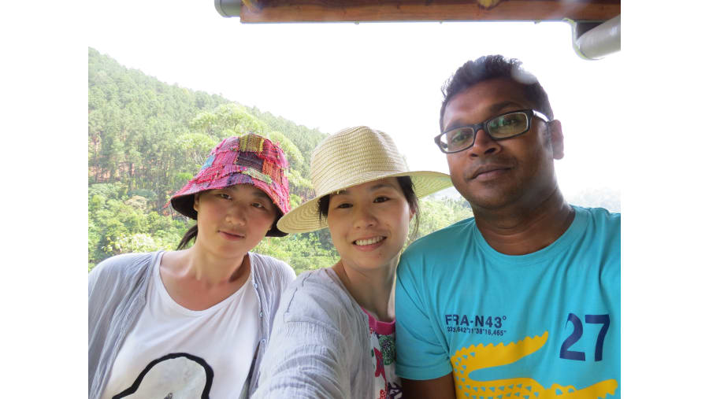
Praveen Mendis
Praveen has been a professional tour guide for over 10 years, specializing in eco-tours across Sri Lanka..
Experience: 23 years
Languages: English, Hindi
Average Rating: ★★★★☆ (4.5/5)
Specialty: Eco-tours, Wildlife Safaris
Reviews:
- Very knowledgeable and friendly. Highly recommend!" - Raj, India
- The tour with John was unforgettable, especially the wildlife experience." - Emma, UK
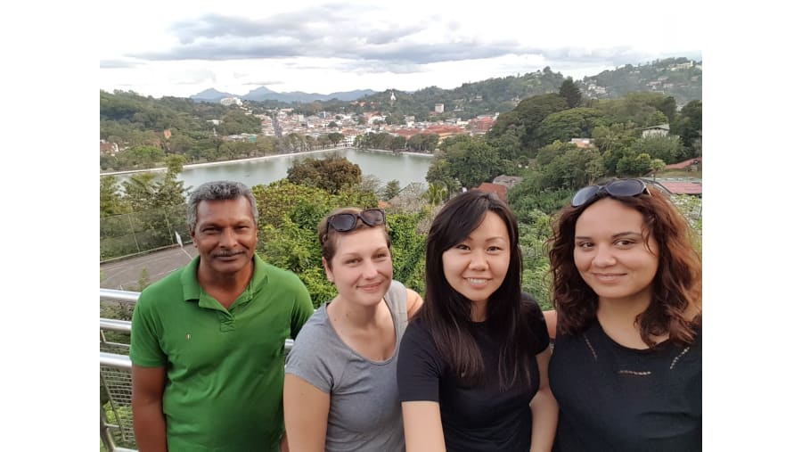
Charles Andrew
Charles Andrew is a passionate cultural guide, offering deep insights into Sri Lanka’s ancient history and heritage sites.
Experience: 8 years
Languages: English
Average Rating: ★★★★☆ (4.5/5)
Specialty: Cultural tours, Heritage sites
Reviews:
- Very kind and patient with all our questions." - Nina, Germany
- I learned so much about Sri Lanka’s history thanks to Priya!" - Marco, Italy.
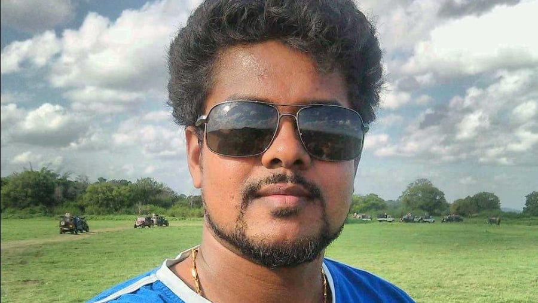
Janaka Rupasinghe
Janaka Rupasinghe has a love for adventure and outdoor activities, making him the perfect guide for hiking and camping tours.
Experience:6 years
Languages: English, Tamil
Average Rating: ★★★★☆ (4.5/5)
Specialty: Hiking tours, Camping trips
Reviews:
- Great experience with Praveen, highly recommended!" - Jane D.
- Very knowledgeable and friendly guide." - Alex P.
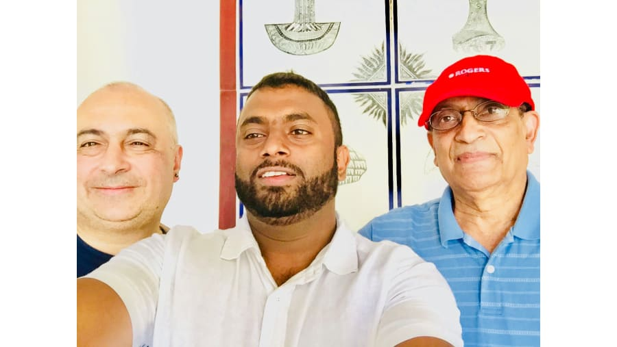
Chinthaka Hatharasingha
Chinthaka Hatharasingha is a local food enthusiast who guides tourists through culinary tours in Sri Lanka’s vibrant cities.
Experience: 5 years
Languages: English,Tamil
Average Rating: ★★★★☆ (4.5/5)
Specialty: Culinary tours, City exploration
Reviews:
- Chinthaka Hatharasingha introduced us to the best local dishes! A food lover’s dream." - Laura, Spain
- He took us to hidden gems only locals know about." - Max, Canada.
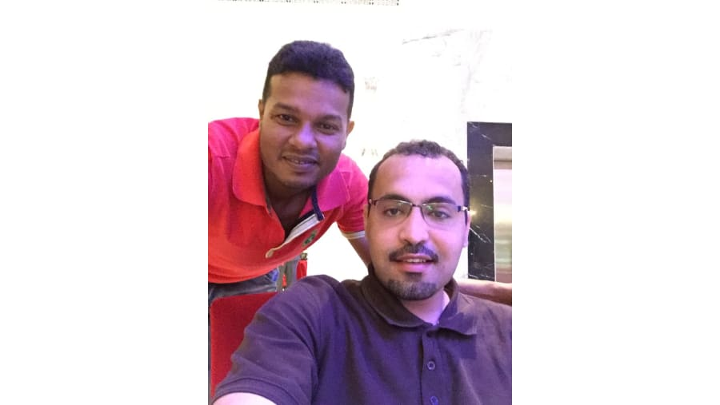
Mohamed Fazil Mohamed
Mohamed specializes in wildlife photography tours, helping tourists capture Sri Lanka’s natural beauty.
Experience: 13 years
Languages: English,Tamil
Average Rating: ★★★★☆ (4.5/5)
Specialty: Wildlife photography, National parks
Reviews:
- Mohamed helped me capture amazing wildlife shots!" - Oliver, Germany
- Incredible knowledge about local wildlife." - Emma, USA.
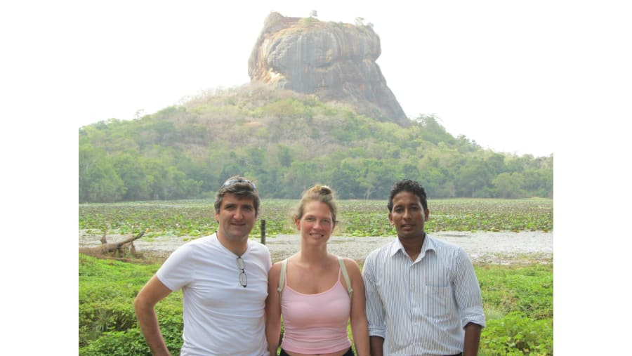
Amith De Silva
Amith is an expert on Sri Lanka’s tea plantations and offers personalized tours through the scenic tea estates.
Experience: 9 years
Languages: English ,Sinhala
Average Rating: ★★★★☆ (4.5/5)
Specialty: Tea plantation tours, Scenic tours
Reviews:
- A great experience in the heart of Sri Lanka’s tea country." - Maria, Portugal.
- Breathtaking views and wonderful guide!" - Karen, Australia
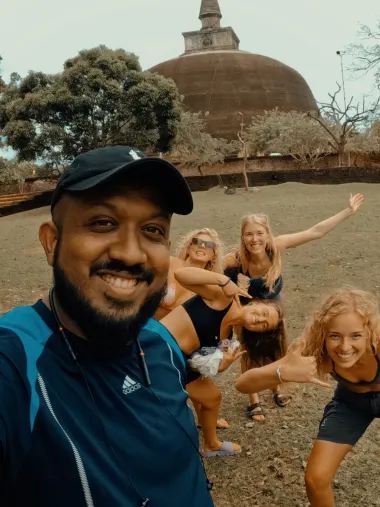
Anthony Prageeth
Prageeth is a city guide who helps tourists explore Sri Lanka’s vibrant markets and historical sites..
Experience: 7 years
Languages: English, German
Average Rating: ★★★★☆ (4.5/5)
Specialty: City tours, Markets, Historical sites
Reviews:
- Prageeth showed us parts of the city we would’ve never found on our own." - Elena, Russi
- His knowledge of local markets is unbeatable." - Martin, Ireland
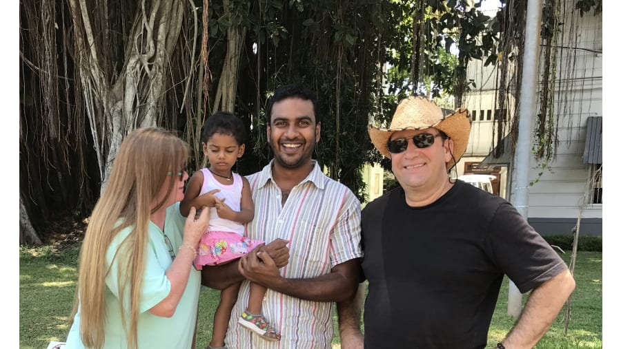
Dilhan Suraweera
Dilhan Suraweera is a wildlife conservationist who offers eco-friendly tours focusing on Sri Lanka’s biodiversity..
Experience: 13 years
Languages: English
Average Rating: ★★★★☆ (4.5/5)
Specialty: Eco-tours, Wildlife conservation
Reviews:
- Tharindu is incredibly passionate about wildlife." - Elsa, Denmark
- A wonderful experience with a knowledgeable guide." - Olivia, Canada.
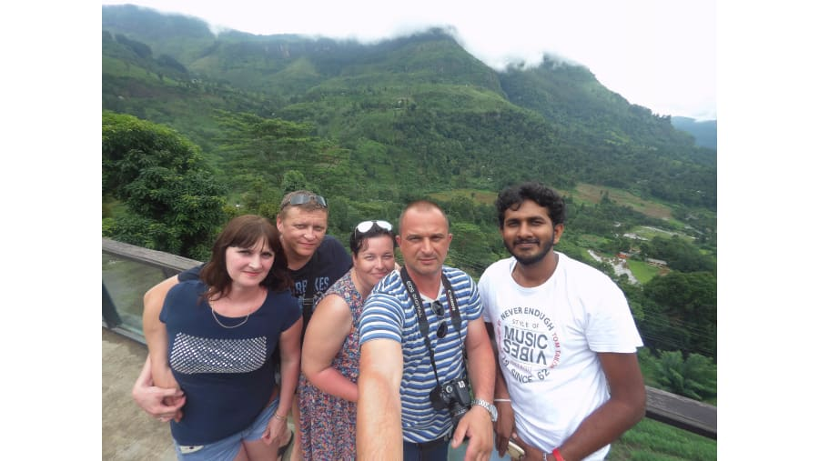
Sujith Jayathunga
Sujith is a mountaineering expert, guiding adventurous tourists to the peaks of Sri Lanka’s mountains..
Experience: 13 years
Languages: English
Average Rating: ★★★☆☆ (3.5/5)
Specialty: Mountaineering, Hiking
Reviews:
- We reached the summit safely thanks to Dinesh’s expertise." - Chloe, UK
- A challenging yet rewarding experience." - Sam, USA.
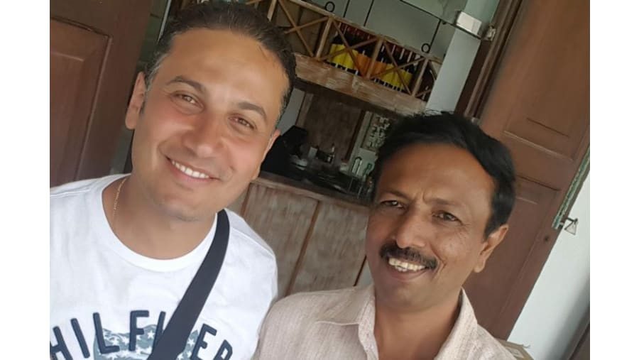
Henry Lional
Henry specializes in religious and spiritual tours, guiding visitors through Sri Lanka’s sacred sites..
Experience: 13 years
Languages: English,Sinhala,Tamil
Average Rating: ★★★★☆ (4.5/5)
Specialty: Religious tours, Sacred sites
Reviews:
- An enlightening experience visiting sacred sites with Suren." - Nathan, USA
- Deeply knowledgeable about Buddhist traditions." - Priya, India.
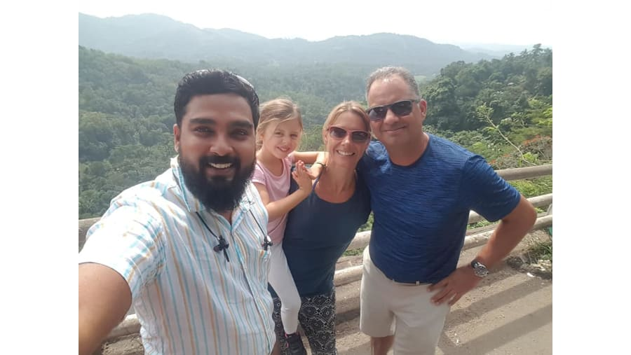
Prasanna Lal
Prasanna is a nature enthusiast who offers birdwatching tours across Sri Lanka’s diverse habitats.
Experience: 14 years
Languages: English
Average Rating: ★★★★☆ (4.5/5)
Specialty: Birdwatching, Nature walks
Reviews:
- A true bird lover’s guide! Fantastic experience." - Lucas, Brazil.
- Incredible knowledge of local birds." - Anton, Sweden.
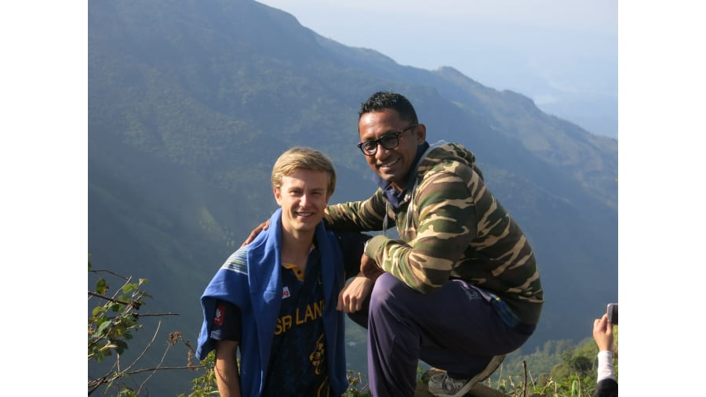
Irosh Galagedara
Irosh is a marine biologist who offers specialized tours focused on Sri Lanka’s rich marine life..
Experience: 10 years
Languages: English
Average Rating: ★★★★☆ (4.5/5)
Specialty:Marine life, Diving tours
Reviews:
- Irosh’s tours are a must for marine life lovers." - Zoe, Australia
- Highly knowledgeable about the ocean and its creatures." - Julia, France.
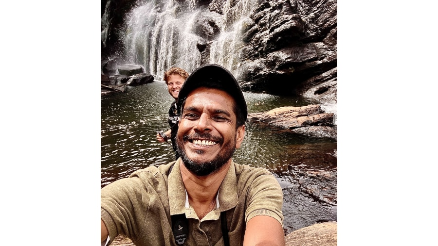
Ruwan Kulathunga
Ruwan is a rural village guide, introducing tourists to the traditional lifestyle and farming techniques of Sri Lanka.
Experience: 13 years
Languages: English,German
Average Rating: ★★★★☆ (4.5/5)
Specialty:Rural village tours, Farming experiences
Reviews:
- A wonderful and authentic experience in the countryside." - Clara, Germany
- An unforgettable cultural experience." - Mia, Italy.
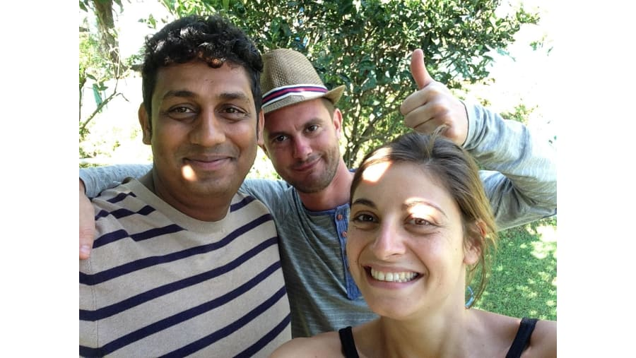
Dileepa Weerasuriya
Dileepa is an adventure sports guide, leading tourists in activities such as white-water rafting and zip-lining.
Experience: 9 years
Languages: English
Average Rating: ★★★★☆ (4.5/5)
Specialty: Adventure sports, Rafting, Zip-lining
Reviews:
- Dileepa took our adrenaline to the next level!" - Tom, USA.
- Thrilling and safe adventure experiences." - Anya, Russia.
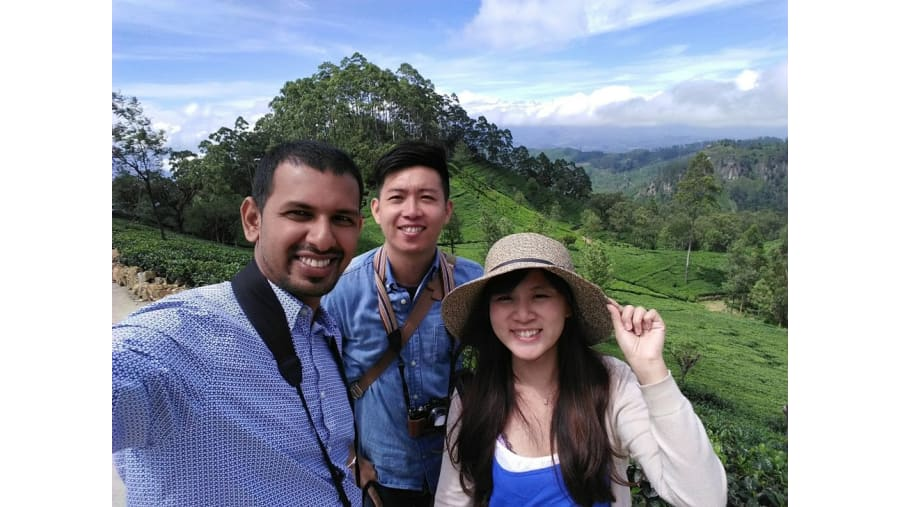
Dhanushka Rathnayaka
Dhanushka offers luxury travel experiences, organizing high-end tours for travelers seeking comfort and style..
Experience: 11 years
Languages: English
Average Rating: ★★★★☆ (4.5/5)
Specialty: Luxury tours, Private travel
Reviews:
- Luxury all the way! Ruwan planned everything perfectly." - Jessica, UAE
- Ruwan made sure every detail of our trip was flawless." - Sofia, Italy.